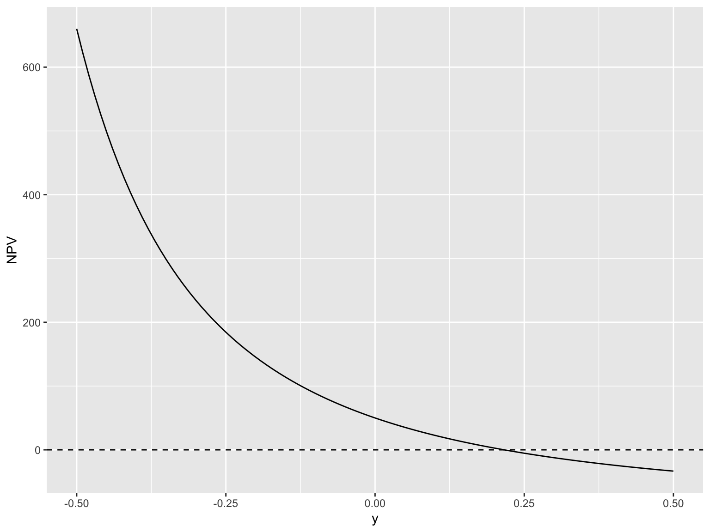
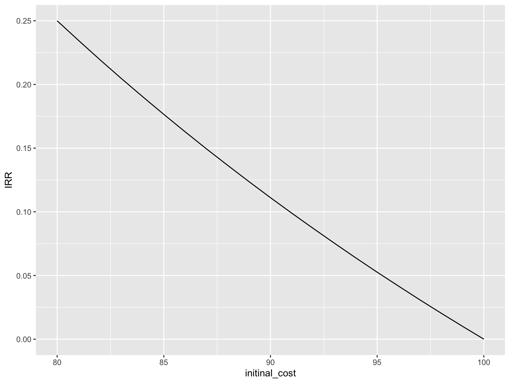
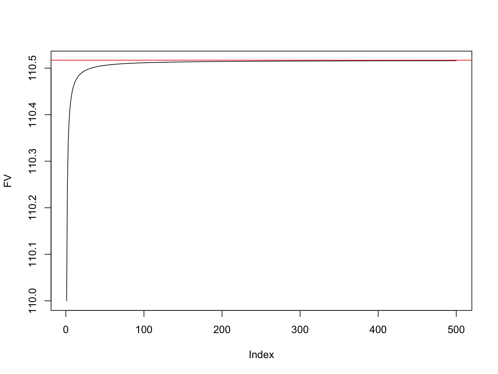

第3章 R言語入門 後半
R言語入門 後半
演習：IRRの計算
IRRを利用した投資判断
第2章ではNPVを用いた投資判断の解説があったが、ここでは内部収益率(Internal Rate of Return: IRR)を用いた投資判断の説明とともに、IRRを計算する関数の作成を行います。
IRRは、投資の収益性を測る指標の一つで、投資の現在価値と、投資にかかる費用の現在価値が等しくなる(つまりNPVがゼロとなる)割引率のことです。IRRが高いほど、投資の収益性が高いと言えます。数式で書くと次のようになります。
\sum_{t =0}^{T} \frac{\mathbb{E}[CF_t]}{(1 + y)^t} = 0
この式のyがIRRを表しており、このyを求めることがIRRの計算になります。 このyを計算するために、まずキャッシュ・フローのベクトルを既知として、yを計算します。 このIRRが，このプロジェクトXのリスクに応じた割引率\tilde{R}_Xより大きいか否かで，プロジェクトを実行するかどうかを判断する。
例えば，以下のようなプロジェクトを考える。
- 初期投資 -100，
- 第1期のキャッシュ・フロー 40
- 第2期のキャッシュ・フロー 50
- 第3期のキャッシュ・フロー 60
このプロジェクトXのNPVは，
PV = -100 + \frac{40}{(1+y)} + \frac{50}{(1+y)^2}+ \frac{60}{(1+y)^3}
となります。グラフにすると

NPVがゼロになる場合のyを求める。解く方程式は次のようになる。
-100 + \frac{40}{(1+y)} + \frac{50}{(1+y)^2}+ \frac{60}{(1+y)^3} = 0
ここで，(1+y) =Yとおいて式を変形していく。
\begin{align*} -100 + \frac{40}{Y} + \frac{50}{Y^2}+ \frac{60}{Y^3} &= 0\\ \Longleftrightarrow -100Y^3 + 40 Y^2 + 50Y + 60 &= 0\\ \Longleftrightarrow 60 + 50Y + 40 Y^2 - 100Y^3 &= 0\\ \end{align*}
この式を解くための関数であるpolyroot()関数がある。 polyroot()関数は，多項式の係数ベクトルをとる。 ついでにround()関数をつかって小数点以下第4位で四捨五入します。
[1] -0.4082+0.5715i -0.4082-0.5715i 1.2165+0.0000i3つの解が出力されているけれど，最初の2つは虚数解となっており，最後の1つが実数解となっているため，ほしい回答は最後の1つです。
この最後の解の実数部分(+000iの部分は虚数部分)を取り出すため，実数解のみを返す基本関数Re()を使います。
今回は，多項式の解が3つしかなかったので，目で実数解を探しましたが，もっと多次元の多項式となるとこうはいきません。 たとえば，Y^7まで出てくる多項式の場合，
[1] 0.4729+0.7717i -0.7573+0.3412i -0.2517-0.8134i 0.4729-0.7717i
[5] -0.2517+0.8134i -0.7573-0.3412i 1.1390+0.0000iこのように解も7つ出てきます。この中から目で実数解を探すのも面倒なので，実数解のみを取り出す関数を作ります。 ここで，Im()関数を使って虚数部分のみをとりだし，そこがゼロとなっていれば，実数解という探し方をします。 教科書ではより精密な方法を採用していますが，ちょっと面倒なので，ここでは解をround()関数で小数点以下第4位で四捨五入しています。 その結果，教科書のような方法をとる必要は無くなり，次のように虚数部分がゼロかどうかの判定を行うことができます。
答えが出ました。
IRRを計算する独自関数の定義
今まで学習した内容を用いて，IRRを計算する関数を定義していきます。 独自関数の定義するには，function()を使います。 いままでは，キャッシュ・フローのベクトルと無リスク利子率を与えると，NPVを計算する関数を定義しましたが，今回は，初期投資を含めたキャッシュ・フローのベクトルを与えるとNPVがゼロとなるIRRを計算する関数を定義します。したがって独自関数の引数は，キャッシュ・フローのベクトルのみとなります。
cal_IRR <- function(CF) {
sol <- polyroot(CF[length(CF):1]) # CFベクトルを逆順にして多項式の解を導出
sol <- round(sol, digits = 4) # 小数点以下第4位を四捨五入
x <- Re(sol[Im(sol) == 0]) - 1 # 内部収益率を計算
return(x)
}
CF <- c(-100, 40, 50, 60) # 例
cal_IRR(CF)[1] 0.2165変な解をもつキャッシュ・フローの場合
内部収益率となりうる正の実数解が2つあるので，IRR法は使えなさそう，となる。
多項式の解を求める方法：ニュートン法
この式を解くことは、yについての方程式を解くことになります。この方程式を解く方法は、二分法やニュートン法などがありますが、ここではニュートン法を用いて解いていきます。
ニュートン法は、ある関数f(x)の解を求める方法で、次のような式で表されます。
x_{n+1} = x_n - \frac{f(x_n)}{f'(x_n)}
この式を用いて、IRRを求める関数を作成していきます。
IRRの計算
まずは、IRRを求める関数を作成していきます。IRRを求める関数は、次のようになります。
データの型 (付録)
プログラミング言語でデータ分析を行う場合に，非常に重要になるのが，データの型です。 とりわけ，経営の実証研究では，複数の変数を複数期間にわたって記録したパネル・データを扱うことが多いので，データの型を理解しておくことは，非常に重要です。 また，Rの神と呼ばれるHadley Wickham氏は，データの型を理解することを，データ分析の第一歩とし，その一貫として整然データ(tidy data)という考え方を提唱しています。 整然データとは，次のような原則に従って構築されたデータのことです(Wickham, 2014) 参考[https://id.fnshr.info/2017/01/09/tidy-data-intro/]。
- 個々の変数 (variable) が1つの列 (column) をなす。
- 個々の観測 (observation) が1つの行 (row) をなす。
- 個々の観測の構成単位の類型 (type of observational unit) が1つの表 (table) をなす。
- 個々の値 (value) が1つのセル (cell) をなす
プログラミング言語には，データの型があり，よく使うものとして，数値型，文字型，論理型などがあります。 Rでは，これらのデータ型をオブジェクトと呼びます。
例えば，次のような表を考えます。
| 地点 | 6時 | 12時 | 18時 |
|---|---|---|---|
| 札幌 | 12℃ 晴れ | 15℃ 晴れ | 13℃ 曇り |
| 大阪 | 20℃ 曇り | 24℃ 雨 | 22℃ 雨 |
| 福岡 | 23℃ 雨 | 25℃ 晴れ | 25℃ 晴れ |
天気予報で見かけそうなこの表は，人間にとっては分かりやすいですが，コンピュータにとっては，分かりにくいものです。 コンピュータが理解しやすい整然データとして表すなら，次のような表になります。
| 地点 | 時間 | 天気 | 気温(℃) |
|---|---|---|---|
| 札幌 | 6時 | 晴れ | 12 |
| 札幌 | 12時 | 晴れ | 15 |
| 札幌 | 18時 | 曇り | 13 |
| 大阪 | 6時 | 曇り | 20 |
| 大阪 | 12時 | 雨 | 24 |
| 大阪 | 18時 | 雨 | 22 |
| 福岡 | 6時 | 雨 | 23 |
| 福岡 | 12時 | 晴れ | 25 |
| 福岡 | 18時 | 晴れ | 25 |
この表は，地点，時間，天気，気温の4つの変数があり1つの列をつくっています(ルール1)。 大阪12時の天気は雨，気温は12℃といったように1つの行が1つの観測を表しています(ルール2)。 このデータには種類の異なる観測はない(ルール3)。 また，各セルには1つの値が入っています(ルール4)。 よって，これが整然データとなります。
また，このデータは4つの変数を含んでおり，それぞれの変数には，次のようなデータ型があります。
- 地点: 文字型
- 時間: 文字型
- 天気: 文字列
- 気温: 数値型
このように1つの変数には，同じデータ型のデータが入っているようにします。数値型のデータの中に1つでも文字列が入っていると，その変数は文字型となります。
データフレーム入門
Rでは，データを扱うためのデータ型として，データフレーム(data frame)というものがあり，非常によく使うので，ここでしっかり説明しておきます。
先ほど分析に使ったch03_daily_stock_return.csvを読み込んでみます。このcsvファイルとは，Comma-Separated-Valuesの略で，値がカンマで区切られているテキストファイルです。
読み込むには，readrパッケージのread_csv()関数を使います。
ここでエラーが出る人は，以下の可能性を検討します。
- ソースコードに誤字がある
ch03_daily_stock_return.csvの場所が違うch03_daily_stock_return.csvが存在しないreadrパッケージがインストールされていないreadrパッケージが読み込まれていない
まず始めに，ソースコードが間違っていないかどうかを確認します。大文字と小文字の間違い，ハイフンとアンダースコアの間違い，スペースの有無などを確認します。
次に，読み込もうとしているフォルダを確認します。そのためには，
ファイルを置いていて，分析結果を保存するための作業用フォルダの中を確認します。そこにファイルがちゃんと存在しているのであれば，setwd()関数で作業ディレクトリをファイルが補完されているフォルダへと変更します。
データフレームに対する基本操作
データの中をさっくり確認するには，head()関数を使って，先頭6行を出力します。
date firm1 firm2
1 2020-04-01 -0.039482142 0.076962597
2 2020-04-02 0.005978689 -0.007248848
3 2020-04-03 0.055786605 -0.017304080
4 2020-04-06 0.041934669 0.002168957
5 2020-04-07 -0.020192796 0.075545365
6 2020-04-08 -0.002294705 -0.096211744出力結果を見ると，1行目に，# A tibble: 6 x 3という文字があります。これは，tibbleというデータフレームの一種であることを示しており，6行・3列のデータとなっていることを表します。
データの行数と列数を確認するには，
とします。 このデータフレーム(正確にはtibbleだけれど同じように扱う)の構造を確認するには，str()関数を使います。
'data.frame': 21 obs. of 3 variables:
$ date : chr "2020-04-01" "2020-04-02" "2020-04-03" "2020-04-06" ...
$ firm1: num -0.03948 0.00598 0.05579 0.04193 -0.02019 ...
$ firm2: num 0.07696 -0.00725 -0.0173 0.00217 0.07555 ...出力結果の1行目をみると，spc_tbl_ [21 × 3]とあり，21行・3列のデータであることがわかります。 2行目から4行目はデータの構造を表しています。 2行目のdata : Date[1:21] は日付型のデータであることを表しています。 3行目と4行目のfirm : num [1:21]は数値型のデータであることを表しています。
このdaily_stock_returnデータフレームのfirm1という変数を取り出すには，$演算子を使います。
[1] -0.039482142 0.005978689 0.055786605 0.041934669 -0.020192796
[6] -0.002294705 0.081707162 0.034560986 0.032601304 -0.037663113
[11] 0.009879806 -0.027028631 0.171296956 0.046325275 -0.014593252
[16] 0.051542677 -0.028875000 -0.041378393 0.004537501 -0.072070643
[21] 0.044811592ベクトルと同じように様々な演算ができるようになりました。 平均値を出すにはmean()，中央値ならmedian()，最大値ならmax()，最小値ならmin()，分散ならvar()，標準偏差ならsd()を使います。
[1] 0.01416117[1] 0.005978689[1] 0.171297[1] -0.07207064[1] 0.002898703[1] 0.05383962変数の統計量として共分散や相関係数を出すには，cov()，cor()を使います。
[1] 0.0006837344[1] 0.2334892相関係数の定義通り，共分散をそれぞれの標準偏差で割ると相関係数になるかどうかを確認してみます。
\rho_{X,Y} = \frac{\mathbb{Cov}[X, Y]}{\sigma_X \sigma_Y}
s_12 <- cov(daily_stock_return$firm1, daily_stock_return$firm2) # 共分散
s_1 <- sd(daily_stock_return$firm1)
s_2 <- sd(daily_stock_return$firm2)
s_12 / (s_1 * s_2) # 相関係数[1] 0.2334892同じになりました。
firm1の中で最も日次リターンが低かった日付を調べる方法を考えます。ここではwhich.min()関数を用いて，最小値をとる要素のインデックスを調べます。
最小の値がインデックスが20の値であること示されている。このインデックスを使って，daily_stock_returnデータフレームの20行目を取り出します。
date firm1 firm2
20 2020-04-28 -0.07207064 -0.04687342[1] -0.07207064最小の値-0.07207064が20番目の値-0.0721と一致しているので，最小の値を見つけられていることが分かる。
データフレームの行数を調べるには，nrow()関数を使います。このデータフレームの行数は21行であることがわかります。
ファクター型と日付型
ファクター型入門
ファクター型の特徴を理解するために、教科書にある例を使って説明します。
firm_ID <- c(1,2,3) # 企業コード的なもの
name <- c("Firm A", "Firm B", "Firm C") # 企業名
industry <- c("Machinery", "Chemicals", "Machinery") # 業種
sale <- c(120, 200, 340)
firm_data <- data.frame(firm_ID, name, industry, sale) # データフレームの作成
head(firm_data) firm_ID name industry sale
1 1 Firm A Machinery 120
2 2 Firm B Chemicals 200
3 3 Firm C Machinery 340これで，企業コード，企業名，業種、売上高の4つの変数を持つデータフレームができました。構造をstr()で確認します。
'data.frame': 3 obs. of 4 variables:
$ firm_ID : num 1 2 3
$ name : chr "Firm A" "Firm B" "Firm C"
$ industry: chr "Machinery" "Chemicals" "Machinery"
$ sale : num 120 200 3404つの変数が3つの観測値をもっており、
- firm_ID: 数値型
num - name: 文字型
chr - industry: 文字型
chr - sale: 数値型
num
となっています。 summary()関数で記述統計量を確認してみます。
firm_ID name industry sale
Min. :1.0 Length:3 Length:3 Min. :120
1st Qu.:1.5 Class :character Class :character 1st Qu.:160
Median :2.0 Mode :character Mode :character Median :200
Mean :2.0 Mean :220
3rd Qu.:2.5 3rd Qu.:270
Max. :3.0 Max. :340 firm_IDが数値型であるため、平均(Mean)が計算されていますが、firm_IDは企業を識別するコードであり、平均をとっても意味はありません。 nameやindustryは文字列なので何も計算されていません。 saleは数値型なので、平均や最大値、最小値などが計算されています。
実際は、firm_IDは数字が入ったベクトル変数ですが、数字は企業を表すラベルであるため、名義尺度です。industryは業種というカテゴリーを表す文字列です。このような変数を扱うときには、factor()関数を使って、ファクター型に変換します。
もう一度str関数を使って構造を確認します。
'data.frame': 3 obs. of 4 variables:
$ firm_ID : Factor w/ 3 levels "1","2","3": 1 2 3
$ name : chr "Firm A" "Firm B" "Firm C"
$ industry: Factor w/ 2 levels "Chemicals","Machinery": 2 1 2
$ sale : num 120 200 340firm_IDとindustryがファクター型になっていることが分かります。ここでもう一度summary()を使ってみます。
firm_ID name industry sale
1:1 Length:3 Chemicals:1 Min. :120
2:1 Class :character Machinery:2 1st Qu.:160
3:1 Mode :character Median :200
Mean :220
3rd Qu.:270
Max. :340 firm_IDとindustryの表示が変わりました。 ファクター型は、カテゴリーを表す変数として扱うことができ、カテゴリーごとにいくつのデータが存在するのかを確認することができます。 適切な分析結果を得るためにも、名義尺度の変数は、ファクター型に変換しておくことが重要です。企業分析の場合は、企業コードや業種コードなどをファクター型にします。
日付型入門
日付型の特徴を理解するために、教科書にある例を使って説明します。
date <- c("2021/04/01", "2021/04/02", "2021/04/03", "2021/04/04", "2021/04/05")
stock_return <- c(0.02, -0.01, 0.03, 0.06, 0.05)
stock_return_data <- data.frame(date, stock_return)
head(stock_return_data) date stock_return
1 2021/04/01 0.02
2 2021/04/02 -0.01
3 2021/04/03 0.03
4 2021/04/04 0.06
5 2021/04/05 0.052つの変数dataとstock_returnがそれぞれ5つの要素をもっているデータフレームを作りました。構造を確認してみます。
'data.frame': 5 obs. of 2 variables:
$ date : chr "2021/04/01" "2021/04/02" "2021/04/03" "2021/04/04" ...
$ stock_return: num 0.02 -0.01 0.03 0.06 0.05dateは文字列、stock_returnは数値型となっています。 ここでdateは日付を表す文字列ですが、文字列として扱われているため、日付としての計算ができません。
Rに2021/04/01のような日付情報を日付型のデータとして認識してもらう方法はいくつかありますが、ここでは基本関数のas.Date()関数を使う方法と、tidyverseパッケージ群の1つであるlubridateパッケージを使う方法を説明します。
'data.frame': 5 obs. of 2 variables:
$ date : Date, format: "2021-04-01" "2021-04-02" ...
$ stock_return: num 0.02 -0.01 0.03 0.06 0.05date変数の方がDateに成りました。summary()関数を使ってみます。
date stock_return
Min. :2021-04-01 Min. :-0.01
1st Qu.:2021-04-02 1st Qu.: 0.02
Median :2021-04-03 Median : 0.03
Mean :2021-04-03 Mean : 0.03
3rd Qu.:2021-04-04 3rd Qu.: 0.05
Max. :2021-04-05 Max. : 0.06 日付のdateも最小値は平均などが出力されていることが分かります。 日付型Dateは、日付としての計算ができるようになります。
[1] "2021-04-02" "2021-04-03" "2021-04-04" "2021-04-05" "2021-04-06"Time difference of 2 daysこのようにDate型にすれば、日数の加算や二時点間の日数の差を計算することができます。
次にlubridateを用いた方法をみていきましょう。 lubridateはtidyverseパッケージ群の1つで、日付型のデータを扱うためのパッケージです。かなり便利なので使いこなせるように頑張りましょう。 先の日付データは2021/04/01と年・月・日がスラッシュで区切られているので、ymd()関数を使って、日付型に変換します。
'data.frame': 5 obs. of 2 variables:
$ date : Date, format: "2021-04-01" "2021-04-02" ...
$ stock_return: num 0.02 -0.01 0.03 0.06 0.05この日付データから年、月、日を取り出すには、year()、month()、day()関数を使います。
外部パッケージの使い方
外部パッケージのインストール
Rの魅力の1つに，多くの外部パッケージが存在することが挙げられます。外部パッケージを使うことで，Rに様々な機能を追加することができます。もともとRに組み込まれている基本関数とは異なり，外部パッケージを使うためには，まずインストールする必要があります。インストールするには，install.packages()関数を使います。例えば，tidyverseパッケージをインストールするには，以下のようにします。
tidyverseパッケージ群に含まれるパッケージに，グラフ作成のためのggplot2がある。ggplot2をインストールするには，以下のようにします。 作図用データを作成します。
initinal_cost <- seq(80, 100, by = 1)
IRR <- rep(NA, length(initinal_cost))
for (i in 1:length(initinal_cost)) {
IRR[i] <- cal_IRR(c(-initinal_cost[i],100))
}
figure_data <- data.frame(initinal_cost, IRR) # データフレーム作成
head(figure_data) # データの確認 initinal_cost IRR
1 80 0.2500
2 81 0.2346
3 82 0.2195
4 83 0.2048
5 84 0.1905
6 85 0.1765これをまずは基本関数plot()で作図してみる。
次にこれをggplot2パッケージを使って書いてみます。
library(tidyverse)
g <- ggplot(figure_data) + aes(x = initinal_cost, y = IRR) + geom_line()
print(g)
折れ線グラフだけだと分かりづらいので，点をプロットしてみます。
点が加わりました。さらに雑誌Economist風のデザインにしてみます。
次に，グラフ内に文字を追加してみます。 グラフ内に文字列を追加するにはannotate()関数を使います。
練習問題
練習問題1
練習問題2
練習3
元本P円を年利Rで1年間運用することを考えよう。 1年当たりの複利の回数をnとおいたとき，T年後の将来価値は以下のように書ける.
FV(n) = \left ( \frac{1+R}{n}\right )^{Tn} P.
将来価値を計算する関数を作成せよ。
練習4*
複利の頻度を無限大にすると連続複利に収束します。すると将来価値は次式で表されます。
\lim_{n \rightarrow \infty} FV(n) = P \mathrm{e}^{RT}
ここで、元本100万円を年利10％、連続複利で1年間運用した場合の将来価値を計算してみる。
練習5*
- 元本100万円
- 年利10%
- 1年間運用
1年当たりの複利の回数をnとおき，nを変化させたときの将来価値FV(n)がどう変化するのか可視化する。
CF <- 100
R <- 0.1
T <- 1
FV <- rep(NA,500)
for (i in 1:500){
FV[i] <- cal_FV(CF, R, n=i, T)
}
plot(FV, type = "l")
abline(h = 100 * exp(0.1), col = "red")
将来価値100\times \mathrm{e}^{0.1}に収束していることがわかる。